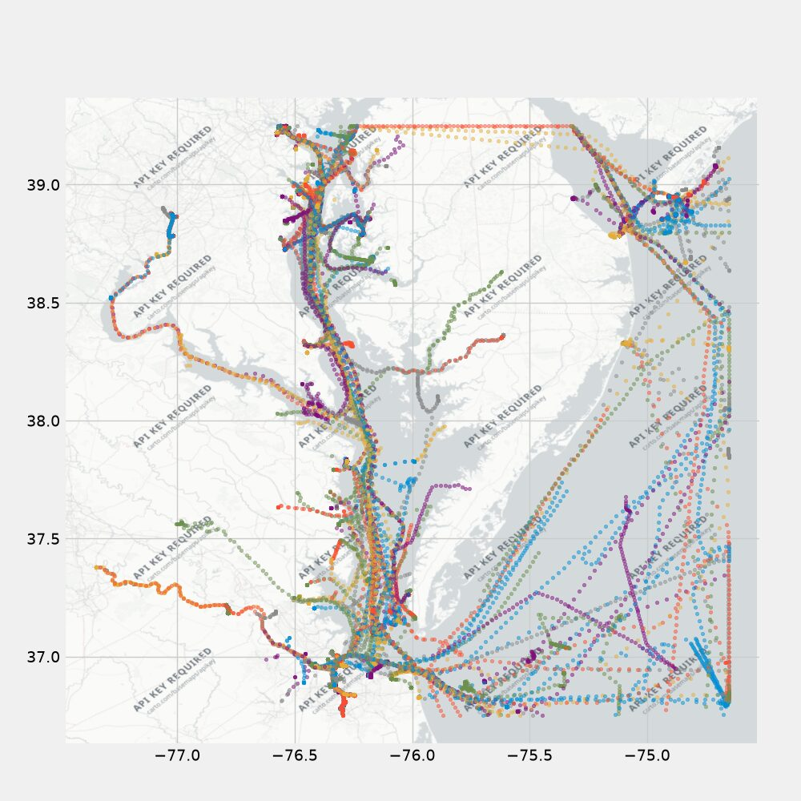

Processing Marine Cadastre AIS Data for TrAISformer
September 8, 2026The Marine Cadastre publishes a year of Automatic Identification System (AIS) broadcast messages from every vessel required to carry a transponder — position, speed, and heading, reported every few seconds. This repo processes the 2023 data into the format used by TrAISformer, a transformer model for vessel trajectory prediction. I have a fork of TrAISformer where I train it on this data.
After the pipeline below runs, each record is [lat, lon, sog, cog, unix_timestamp, mmsi] —
latitude, longitude, speed over ground, course over ground, a timestamp, and the vessel’s MMSI
identifier. This is the format used in the TrAISformer paper, so the processed data can be fed
directly into the model. The default output location is ./output/mc_ais, as pickle files.
All of the code discussed below lives in the coast_guard_AIS_data repository on GitHub.
Data Processing Pipeline
Getting the Data
Edit the paths in scripts/get_all_2023_broadcast_data.sh to download all the data (you might
need to make the script executable with chmod +x). The 365 days of 2023 data is about 111GB
of compressed csv files; I downloaded it into a directory called zips.
Unzipping the Data
Unzip everything and move it into another directory:
ls zips/ | xargs -I {} unzip zips/{} -d unzips/
The unzipped data is about 303GB.
Future work: convert the data to parquet format to save on space.
Filter Out Invalid Data
python ./filter_invalid_data.py
This removes bad data — unrealistic speeds (see max_sog_kts in config.py), MMSIs that
aren’t 9 digits, MMSIs that belong to aircraft, negative headings, and so on. Rows that pass
validation are written to another csv file. Roughly 80-82% of the data is valid. Update the
paths in the script for your system.
Select Region-of-Interest Data
The TrAISformer paper trained on a region of interest about 2.5 x 2.7 degrees in lat x lon;
the same size is the default in configs.py. Unlike the paper, though, the default region
here is centered on Washington, DC / Chesapeake Bay.
python ./select_roi_data.py
About 4-7% of the data falls within the default Washington DC / Chesapeake Bay region.
Create Tracks
Build vessel tracks from the broadcast messages:
./create_tracks.py
Optionally, plot the tracks afterward with ./plot_tracks.py.

Split Data
python ./split_tracks.py
Splits the tracks into train, eval, and test sets, ready for TrAISformer.
The full source — the download script, the filtering and region-of-interest steps, track construction, and the train/eval/test split — is on GitHub at dennisfgardner/coast_guard_AIS_data.
Source code: https://github.com/dennisfgardner/coast_guard_AIS_data